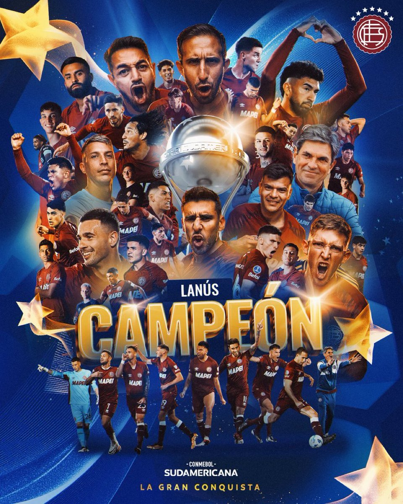

¡LANÚS CAMPEÓN DE LA COPA SUDAMERICANA 2025!
Una noche eterna para nuestra ciudad. Una hazaña que quedará en la historia del fútbol y en el corazón de Lanús.

Lo que se vivió anoche en el Estadio Defensores del Chaco será recordado por generaciones: Lanús se consagró campeón de la CONMEBOL Sudamericana 2025 tras vencer a Atlético Mineiro en una final dramática que se definió por penales.
Después de un durísimo 0-0 en 120 minutos llenos de tensión, la historia se escribió desde los doce pasos. Fue entonces cuando surgió la figura del héroe granate: Nahuel Losada, quien atajó ¡tres penales! quedando inmortalizado en la historia del club.

Una fiesta que unió a todo Lanús
Desde Escalada hasta Villa Obrera, desde Gerli hasta Monte Chingolo, la ciudad explotó en abrazos, bocinas, banderas y festejos. Y para nosotros, como comunidad educativa de la E.E.S.T Nº3 “Islas Malvinas”, este triunfo tiene un valor especial: nuestra escuela está en el corazón de Lanús, y nuestros estudiantes y familias viven esta alegría como propia.
"Esta copa es para la gente, para el barrio, para todos los que sueñan con que Lanús sea grande siempre."
La segunda estrella internacional
Lanús suma así su segundo título internacional, luego de la Sudamericana 2013. Este 2025 marca:
- 2° Copa Sudamericana en la historia del club.
- Clasificación directa a la Copa Libertadores 2026.
- Reconocimiento continental al proyecto deportivo del club.

Una noche que no se olvida
Las calles se tiñeron de granate hasta el amanecer: familias completas celebrando, chicos pintados de los colores del club, abuelos emocionados, y miles de hinchas viviendo una alegría histórica.
Para Lanús, esta no es solo una copa: es la demostración de que un barrio, una ciudad y una comunidad unida pueden alcanzar lo imposible. El Sur también existe, y hoy el Sur es campeón de América.
¡Felicitaciones gran campeón! ¡La Copa se queda en casa! ❤️🤍
⬅ Volver a Noticias